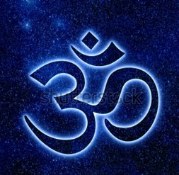
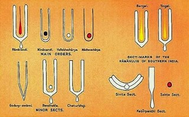
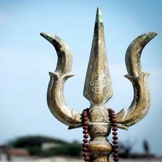
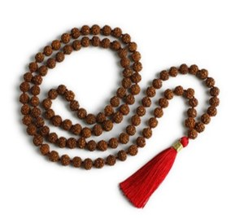
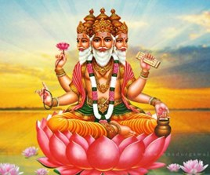
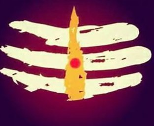
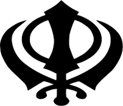
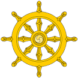

Om (or Aum): The Om is the most universal of Hindu symbols and its sound is used in meditation. In Hinduism, the word “0m” is the first syllable in any prayer. More specifically, Om is used to symbolizing the universe and the ultimate reality. Some people say that this symbol represents the three aspects of God: The Brahma (A), The Vishnu (U), and The Shiva (M).The Sri Yantra: Also called the Sri Chakra, this symbol is characterized by nine interlocking triangles that radiate from the central point. Of the four upright triangles represent the masculine side of Shiva; while the five inverted triangles represent the feminine or Shakti (Divine Mother). As a whole, The Sri Yantra is used to symbolize the bond of unity of both the masculine and feminine divinity.The Tilaka: This symbol is often placed on the forehead of the devotee of Hinduism. The Tilaka comes in many different shapes, depending on the custom or religious affair. Devotion to Lord Vishnu is indicated by a U-shaped Tilaka, while horizontal lines symbolize devotion to Lord Shiva.The Trishula: The Trishula or the Trident is a prominent Hindu symbol that is associated with Lord Shiva. Through this three-pronged symbol is usually viewed as a weapon used by the Lord for the protection and restoration of Dharma, it actually carries deeper meanings. It is representative of the Trinity of Brahma, Vishnu, and Mahesh and stands for the balance between the forces of creation, preservation, and destruction. It is also considered symbolic of the three Gunas – Rajas, Tamas and Sattva. Another symbolic representation of the Trishula is that of the three facets of consciousness, namely, cognition, affection, and donation.The Rudraksha: The Rudraksha is a tree that is found in Southeast Asia, Nepal, The Himalayas, New Guinea, and Australia. Its blue seeds are said to symbolize the tears of Lord Shiva, the Destroyer. Legend has it that when Shiva saw how his people suffered, he shed one tear which grew into a Rudraksha tree. The name Rudraksha actually comes from “Rudra’ (another name for Shiva) and “Aksha” which means eyes. The seeds from this tree are also used to make prayer beads and rosaries.The Shiva Lingam: The Shiva Purana describes the origin of the lingam, known as Shiva-linga, as the beginning-less and endless cosmic pillar of fire, the cause of all causes. Lord Shiva is pictured as emerging from the lingam – the cosmic pillar of fire – proving his superiority over the gods Brahma and Vishnu. This is known as Lingodbhava.Bindi: One of the most well-known items in Hinduism is the bindi, a dot (often the color red) worn on women’s foreheads. It is a form of the tilak, a symbolic mark worn by many Hindu men and women, but that has less religious meaning than other tilaks. Traditionally, the bindi is worn on the forehead of married Hindu women. It symbolizes female energy and is believed to protect women and their husbands from bad things. Bindis are traditionally a simple mark made with the paste of colored sandalwood, indoor, or turmeric. The bindi is most commonly a red dot made with vermilion.Brahman – One can say that Brahman Itself (him/herself) constitutes the essential building material of all reality, being the substance from which all things proceed. Brahman, as understood by the scriptures of Hinduism, as well as by the ‘acharyas’ of the Vedanta school, is a very specific conception of the absolute. This unique conception has not been replicated by any other religion on earth to this day and is exclusive to Hinduism.Fire Altar – The fire altar is regarded as a distinct symbol of ancient Vedic rites. It is through the fire element, denoting divine consciousness, that the Hindu make offerings to the Gods. Hindu sacraments are solemnized before the fire.Tripundra: The Tripundra is a prominent Hindu symbol that is used by Shaivites or the devotees of Lord Shiva. Tripundra is typically a tilak, with three horizontal lines made from Bhasma or sacred ash applied on the forehead. It may have a red dot or Bindu superimposed in the center. Some Shiva followers also draw the three ash strips of Tripundra on the sides of their arms. The Tripundra represents the three godly forces of creation, sustenance, and destruction through the three lines, while the ashes symbolize purification and burning away of Anava (ego), Maya (illusions), and karma(actions/deeds). The dot is symbolic of the rise or quickening of spiritual insight.Khanda: This symbol came when the Sikh soldiers fought the war. It depicts the Sikh doctrine Deg Tegh Fateh in emblematic form. It reflects some of the fundamental concepts of Sikhism. The symbol derives its name from the double-edged sword (also called a (Khanda) which appears at the center of the logo. This double-edged sword is a metaphor of Divine Knowledge, its sharp edges cleaving Truth from Falsehood. The circle around the Khanda is the Chakar. The Chakar being a circle without a beginning or and end symbolizes the perfection of God who is eternal. The Chakar is surrounded by two curved swords called Kirpans. These two swords symbolize the twin concepts of Meeri and Peeri - Temporal and Spiritual authority introduced by Guru Hargobind.Dharmachakra: Buddhist symbolism is the method of Buddhist art to represent certain aspects of dharma, which began in the fourth century BCE. Anthropomorphic symbolism appeared from around the first century CE with the arts of Mathura the Greco-Buddhist art of Gandhara and was combined with the previous symbols. One of the most popular symbols is the Dharmachakra, or eight-spoked wheel, which represents the Buddha and Buddhism. Just by seeing the symbol, it tells us how buddha was and also helps us in life.Symbol of Ahimsa: The word is derived from the Sanskrit root hims – to strike; himsa is injury or harm, ahimsa is the opposite of this, i.e. non-harming or nonviolence. It is an important tenet of most Indian religions. This symbol is important as the symbol spreads a message of ahimsa to the followers of Jainism and other people also. The hand with a wheel on the palm symbolizes Ahimsa in Jainism. The word in the middle is "ahimsa" (non-injury). The wheel represents the dharma chakra, which stands for the resolve to halt the saṃsāra through the relentless pursuit of Ahimsa. This symbol tells not to harm any living being. This is not only important for Jain people it is important for non – Jain also.